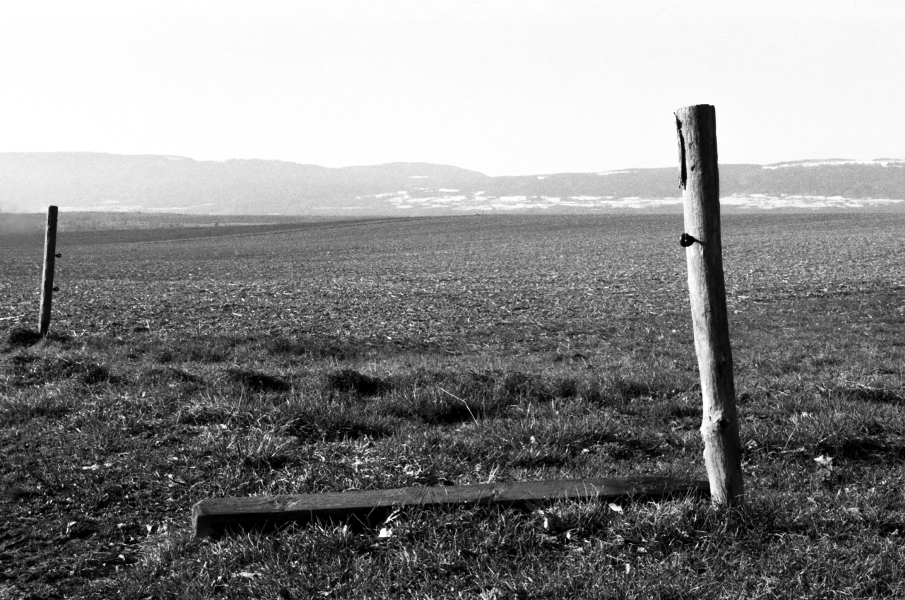
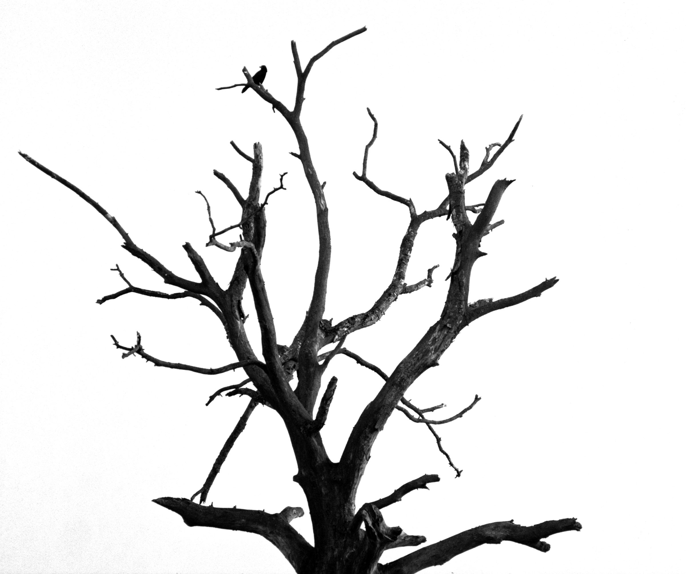
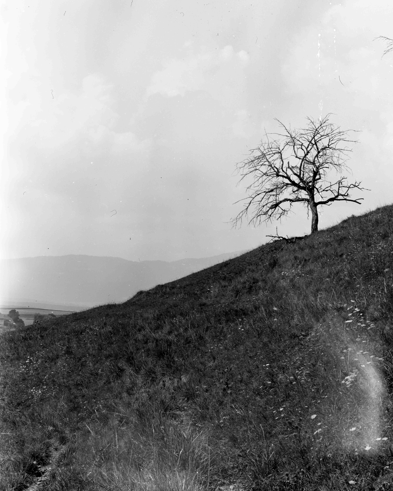
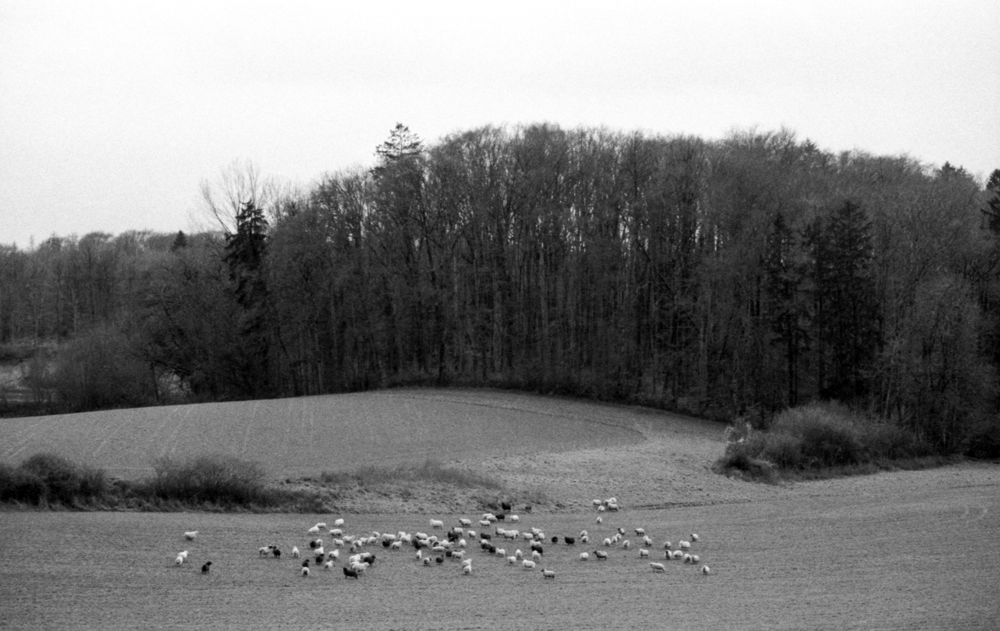
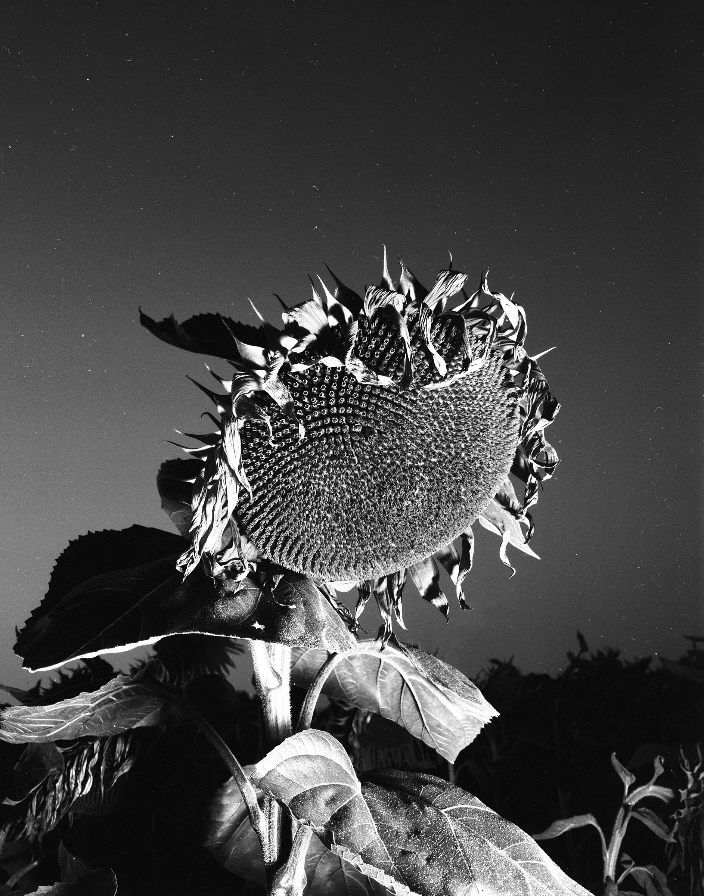
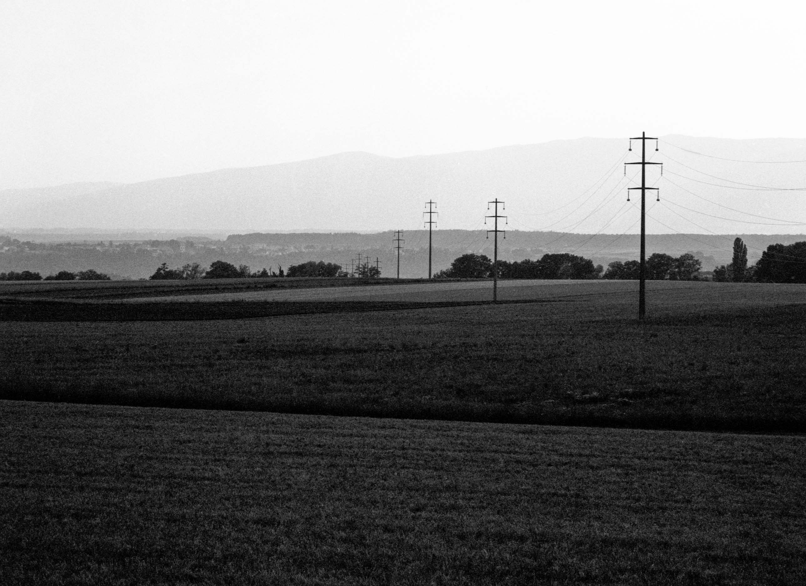
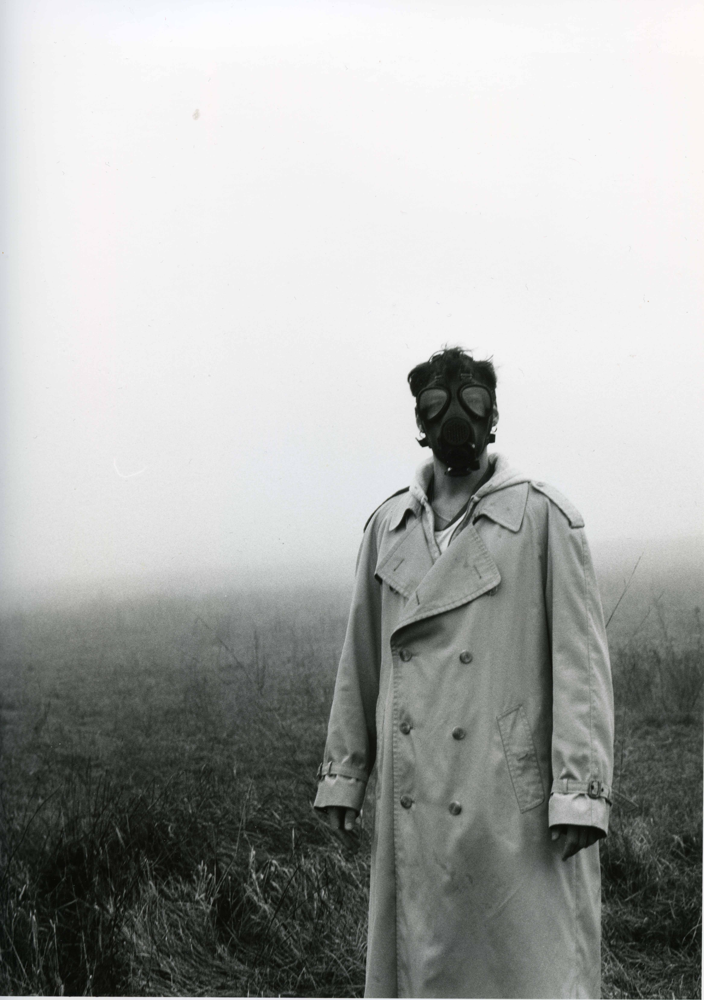
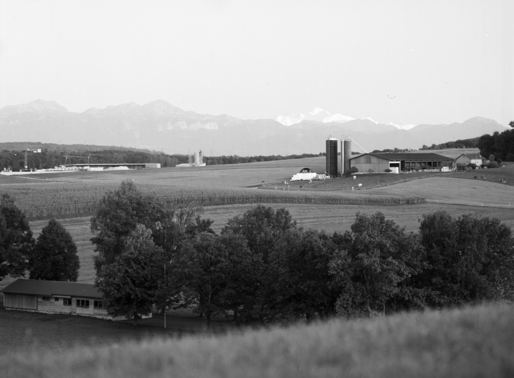
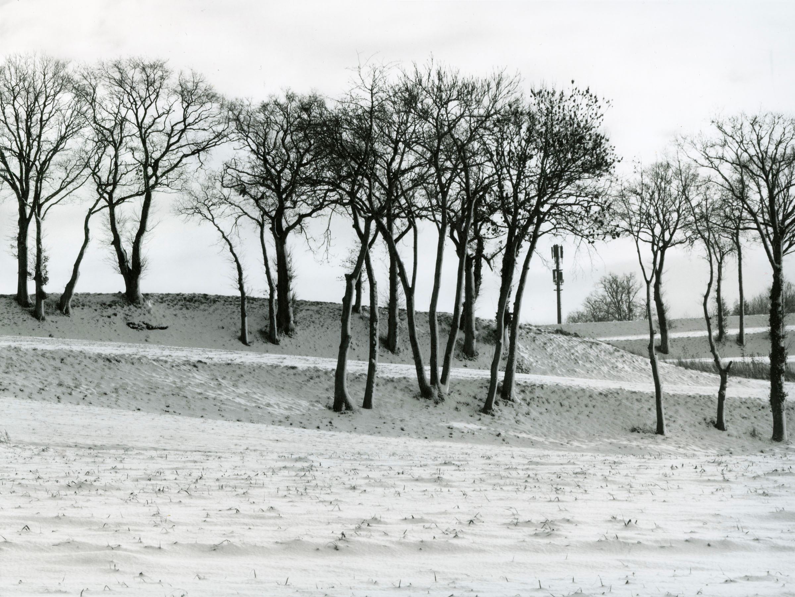

Rural
Paysages de campagne et d'absence.

_2.jpg)








Ces photographies sont un moyen pour moi de redécouvrir les paysages qui m'ont vu grandir, de témoigner subjectivement de leur apparence et, finalement, de redéfinir l'image mentale que nous avons de la campagne suisse romande.
voir les autres projets plus ou moins concret